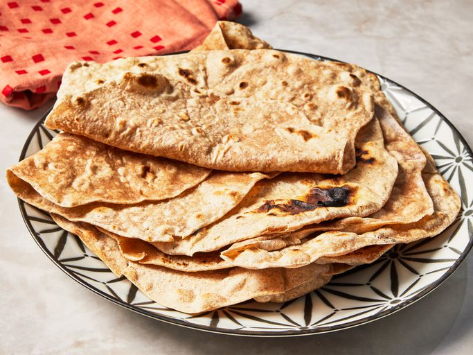

Chapathi
Ingredients:
- 2 cups Whole wheat flour (atta)
- ¾ cup Water (adjust as needed)
- 1 tsp Oil (optional)
- Salt – a pinch (optional)
- Extra dry flour – for rolling
- Ghee or butter – for serving (optional)
Instructions:
- In a bowl, mix wheat flour with salt (optional).
- Slowly add water and knead into a soft, smooth dough (not sticky).
- Cover and let the dough rest for 20–30 minutes.
- Divide the dough into equal-sized balls.
- Roll each ball into a thin round chapathi using dry flour as needed.
- Heat a tawa or skillet. Place the chapathi on it and cook for a few seconds.
- Flip when small bubbles appear. Cook both sides evenly, pressing gently for puffing.
- Apply ghee if desired. Serve hot with kurma, chutney, or sabzi.